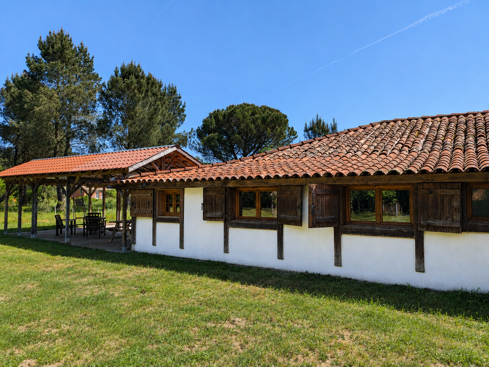

La maison
La Musarde réunit trois logements indépendants au sein d’une même propriété, dans un cadre calme, arboré et pensé pour des séjours confortables et apaisants.

Une propriété pensée pour respirer
Un lieu privilégiant l’espace, la tranquillité et la simplicité, avec de nombreuses possibilités de détente et de circulation.
En bref
- Grand terrain arboré de 5 547 m²
- Trois logements indépendants
- Espace calme et paisible
- Jeux pour enfant
- Fibre optique
Informations essentielles
Ce qui est fourni
- Internet avec fibre optique
- Chauffage
- Cuisines équipées
- Vaisselle et équipements du quotidien
- Linge et draps sur demande
- Télévisions et chaînes nationales
- Barbecue ou plancha selon les logements
- Stationnement sur place
Bon à savoir
- La gare d’Ychoux permet d’accéder facilement au logement ou de rejoindre Bordeaux et le Pays basque
- La maison est facilement accessible en voiture, avec une situation pratique pour rayonner vers les lacs, l’océan et les communes voisines : Biscarrosse, Parentis-en-Born, Mimizan, etc.
- Ychoux dispose de tous les commerces essentiels
Règles simples
- Logements non-fumeurs
- Respect du calme du lieu
- Respect des espaces extérieurs
- Les animaux sont les bienvenus
Les logements

Dune
Grand logement, idéal pour accueillir une famille avec des enfants dans un environnement calme et agréable, avec accès à une grande terrasse et à un grand jardin.

Pin
Un espace chaleureux et fonctionnel, parfait pour accueillir un couple souhaitant profiter du calme et de la nature.

Kbane
Logement réservé aux propriétaires.
Découvrir le lieu en images
Accédez à la galerie complète pour découvrir les extérieurs et les différents logements.